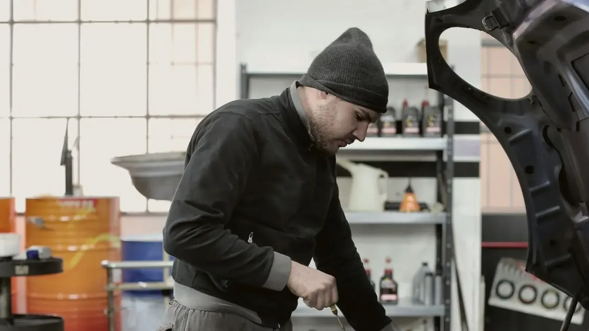

Create one trillion dollars in new wealth for everyday Americans. It's bold. It's measurable. And if achieved it changes the financial lives of millions of people.
TRILLION
But an ambition this big presents two challenges:
The people
don't know it exists
The number
A trillion dollars is too big to feel.
So how do you make it personal?
Turn the number into a story
The Road to One Trillion
takes a once-in-a-generation pursuit and translates it into a documentary series that carries Core's message through the people, companies and ideas driving it forward.
Now we're not just talking about a number. We're talking about…
Families
buying their first home

Entrepreneurs
creating new jobs
Parents
with insurance they can count on
A story already underway
Part of what makes The Road to One Trillion so compelling is that nothing needs to be manufactured. We're stepping into something that's already in motion. The high stakes, the relatable characters, and the extraordinary challenge are all naturally in place.
This is more than a series of talking heads talking about a better future. We follow the people making it. We go inside the companies taking on some of America's biggest challenges. We meet the people whose lives are being changed. We see what's working, what isn't, and how far there is still to go.
And along the way, we see something deeply inspiring: some of the country's biggest challenges are being met by people who refuse to accept that they can't be solved.
Core has already begun writing an extraordinary story. Now it's time to share it
Designed as a campaign— not a single film
01
The flagship
A premium long-form documentary establishes the story and introduces the people, companies and challenges at the heart of Core's pursuit.
02
The chapters
Shorter pieces follow the sparks as they happen. A breakthrough. A setback. A victory.
03
The journey
As Core moves toward one trillion, every new person, company, breakthrough and milestone creates another chapter.
Real people, real stakes, and a real outcome that hasn't been decided yet
founders
customers
experts
investors
viewers
Putting the story to work
A living documentary property that grows alongside the pursuit.
Find the next generation
Put Core's philosophy in front of entrepreneurs already trying to solve the problems Core cares about, and meet them earlier than anyone else does.
Amplify the portfolio
Give exceptional portfolio companies a premium platform to tell their stories, expand their reach, and bring new people into the ecosystem.
Build the network
Every founder, company, customer, expert, investor and viewer brought into the story creates new connections, and new opportunities for Core.
Make one trillion personal
Let's turn a bold ambition into a story people can believe in